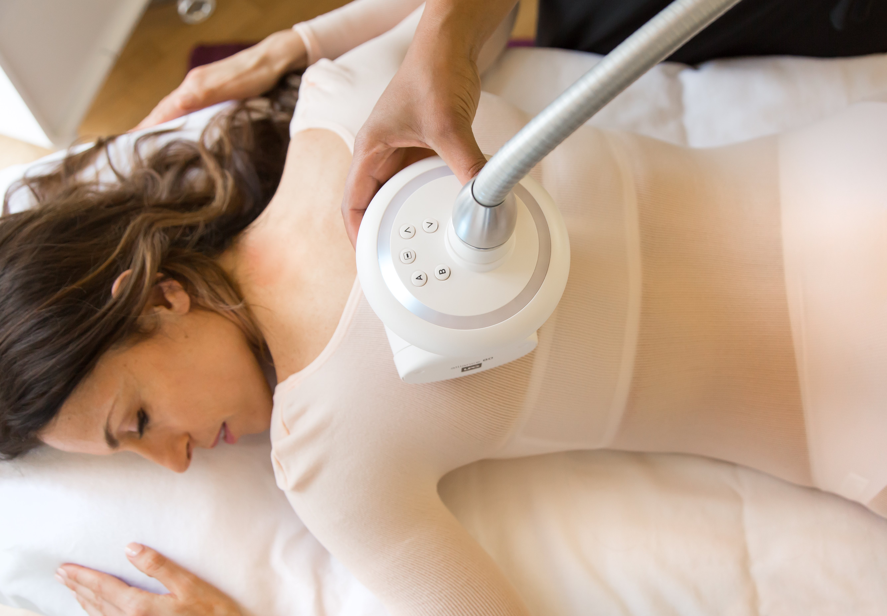
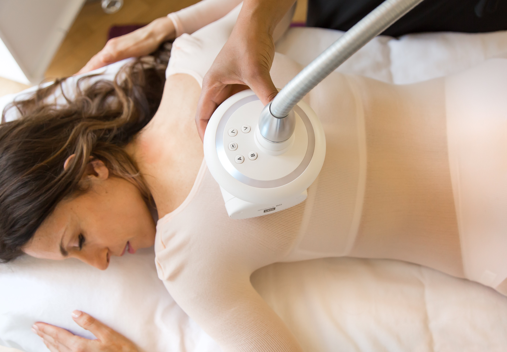

LPG este o tehnologie non-invazivă care utilizează masajul mecanic pentru a stimula celulele și a reduce aspectul celulitei, îmbunătățind totodată tonusul și fermitatea pielii.
Beneficiile LPG
Reducerea circumferinței corporale
Îmbunătățirea aspectului pielii
Stimularea circulației sanguine
Reducerea celulitei
Cui i se adresează?
LPG este ideal pentru persoanele care doresc să reducă aspectul celulitei și să își îmbunătățească conturul corporal fără intervenții chirurgicale.
Procedura Pas cu Pas
Evaluare inițială: Un specialist va evalua zonele care urmează a fi tratate și va stabili planul de tratament.
Tratament: Fiecare ședință durează aproximativ 35-45 de minute și implică utilizarea unui dispozitiv LPG care masează zonele afectate.
Îngrijirea post-tratament: Se recomandă hidratarea corespunzătoare și o dietă echilibrată pentru a maximiza rezultatele.
Rezultate Așteptate și Durata Lor
Primele rezultate sunt vizibile după câteva ședințe, iar efectele complete se observă după 10-15 ședințe. Rezultatele pot fi menținute cu ședințe de întreținere.
Frecvența și Numărul de Ședințe Recomandate
Se recomandă un tratament de 2-3 ori pe săptămână, timp de 5-8 săptămâni, pentru a obține cele mai bune rezultate.
Contraindicații și Precauții
Tratamentul LPG nu este recomandat persoanelor cu afecțiuni cardiace, femeilor însărcinate sau celor care suferă de afecțiuni dermatologice grave. Consultați un specialist înainte de a începe tratamentul.
Întrebări Frecvente
Este dureros tratamentul LPG?
Tratamentul LPG este în general nedureros, dar unele persoane pot simți un ușor disconfort, mai ales la primele ședințe.
Cât durează o ședință?
O ședință de LPG durează în medie 35-45 de minute.
Cât costă tratamentul?
Prețurile variază în funcție de numărul de ședințe necesare și zona tratată. Contactați-ne pentru o ofertă personalizată.
Programări și Contact
Pentru programări, vă rugăm să ne contactați la telefon: +40 123 456 789 sau prin email: contact@bodyfusion.ro.
 
